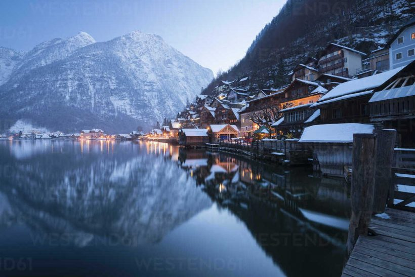
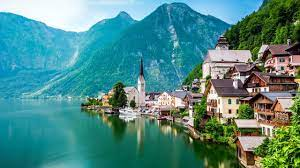
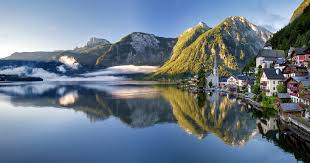

Lugares que você precisa conhecer na Europa
Hallstatt - Áustria



Bem-vindo a Hallstatt, um conto de fadas alpino situado às margens do deslumbrante Lago Hallstätter, na
Áustria. Este pitoresco vilarejo, aninhado entre montanhas imponentes, é uma joia que oferece uma
experiência encantadora e inesquecível.
- Cenário Alpino Deslumbrante:
Hallstatt é conhecida por sua paisagem de tirar o fôlego, com casas pitorescas refletindo nas águas
tranquilas do lago e as majestosas Montanhas Dachstein ao fundo. Cada estação traz sua própria beleza
única, desde os campos floridos da primavera até os picos nevados no inverno, garantindo uma visita
memorável durante todo o ano.
- História e Cultura:
Este idílico vilarejo possui uma história rica que remonta à Idade do Bronze, tornando-o um local de
importância arqueológica. Explore o charme das ruas estreitas e sinuosas, passeie pelas praças
encantadoras e visite o charmoso cemitério com suas capelas decoradas, testemunhas silenciosas do
passado fascinante de Hallstatt.
- Lago Hallstätter e Atividades Aquáticas:
O Lago Hallstätter, emoldurado pelas montanhas alpinas, oferece oportunidades para atividades aquáticas
relaxantes. Faça um passeio de barco tradicional ou simplesmente desfrute de um momento tranquilo à
beira da água. Os entusiastas dos esportes aquáticos também encontrarão opções como canoagem e
paddleboarding.
- A Gruta de Sal de Dachstein:
Aventure-se na vizinha Gruta de Sal de Dachstein, uma maravilha subterrânea onde estalactites e
estalagmites criam uma paisagem mágica. As excursões guiadas proporcionam uma visão fascinante da
mineração de sal que desempenhou um papel crucial na história da região.
- Culinária Austríaca:
Hallstatt oferece uma experiência gastronômica deliciosa, com cafés encantadores e restaurantes que
servem pratos autênticos da culinária austríaca. Experimente especialidades locais, como schnitzel e
strudel, enquanto aprecia vistas espetaculares dos arredores.
- Atividades ao Ar Livre:
Os amantes da natureza encontrarão trilhas deslumbrantes que serpenteiam pelas montanhas circundantes.
Suba até os mirantes para vistas panorâmicas deslumbrantes ou explore as trilhas à beira do lago,
proporcionando um vislumbre do esplendor natural da região.
- Acomodações Acolhedoras:
Encontre hospitalidade genuína em aconchegantes pensões e hotéis que refletem o charme local. A
atmosfera acolhedora de Hallstatt complementa a beleza natural, proporcionando uma estadia relaxante e
memorável.
Tudo que é bom dura pouco
Acabou a grana,hora de voltar